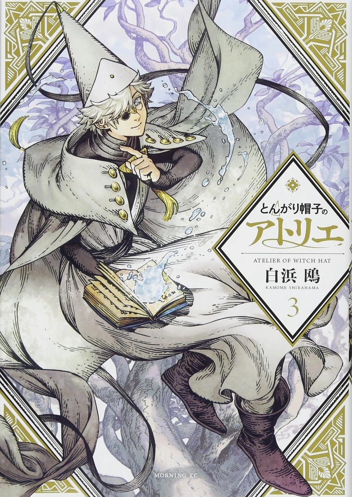
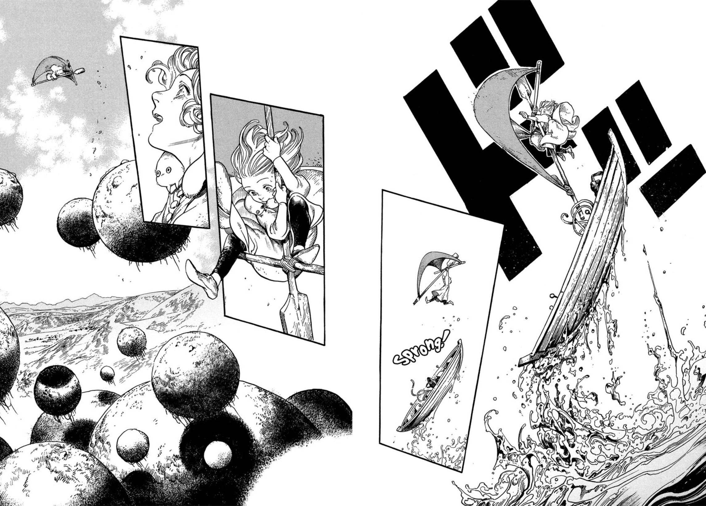
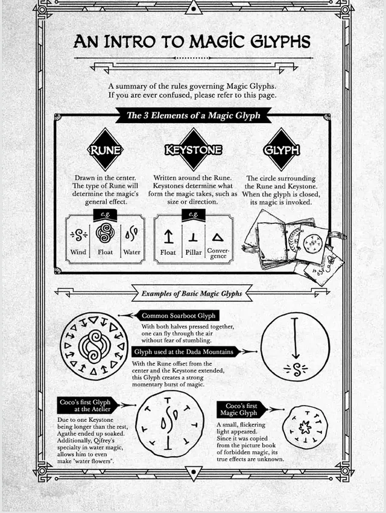
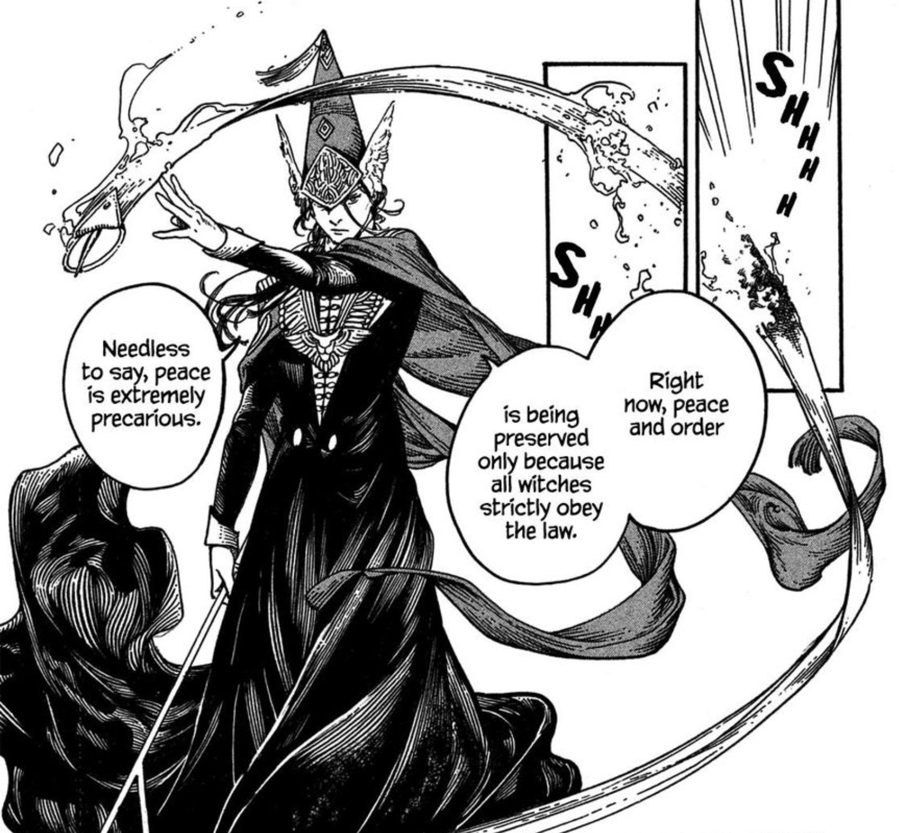

About a week ago, I picked up the Tongari Boushi no Atelier (とんがり帽子のアトリエ) manga series. And right off the bat, more than a few aspects greatly impressed me about this serialisation.
The stupendously stupefying and intricately detailed illustrations; the masterful manipulation of the panels on the page, the deft placement and potent usage of negative space, and an extremely compelling fantasy epic to weave it all through. These are all the elements that made me fall in love with Witch Hat Atelier within its initial few pages.
But what impressed me most of all is the beautifully uncanny way its power system fits the world of Computer Science.
The most ostensible place this similarity is depicted is in the detailed inner workings of the power system itself.
Runes can be interpreted as main, the entry point to a program, the code that roughly defines what an app shall do when it's run.
Keystones would be the variables a program uses during its execution. The data within them can obviously vary in type, amount, length, and shape. These manipulations in the variables then go on to dictate exactly how a process will behave.
Glyphs are the classic closing of a circuit. The compilation of a program, or ./a.out for the highly initiated. That magical moment when you get to see the effects of the magic you drew/code you wrote.
The Witch Hat Atelier series is a gorgeous encapsulation of a truth software engineers around the world know deep in their hearts: the science of computers is pure magic, and some of it's forbidden!
The way Witch Hat mirrors the world of tech not only resides in their magic systems. Frankly, I almost want to believe the mangaka wrote code for FAANG in a previous life the way they've so expertly shown the clandestine and politically influenced side of the industry.
SPOILER TERRITORY
One of the first major ah-ha moments in the plot is the revelation
that anyone—with the right tools—can draw magic! And that magicians
are less special beings blessed by the gods and fruits of
meritocracy, and more lucky bastards who are the poster children of
unfettered nepotism. Unfortunately, all the same can be said,
verbatim, for the tech industry in our world.
If a Luffy-obsessed idiot from Barbados can learn to code, and I'm pretty sure I'm more skilled than the Zuckerburger himself. Then obviously the Tech Lords that rule over us with their magic are not deities, and literally any fool can learn to code—if only they so desire.
If you don't know how to code, you are not a fool; you are mostly likely a very intelligent person who enjoys going outside, touching grass, and having hot, steamy sex in the back of old cars like Rose and Jack. By comparison, CS is boring, coarse, and it gets absolutely everywhere. You'd have to be insane to learn, and something far worse to find joy in the Dark Art of writing code... what am I even talking about anymore?!
Conclusion
The point is, I love writing/reading code equally as much as I enjoy
writing/reading prose. I love the things I learn from both
disciplines and the way I feel creating within them. Matter of fact,
I wrote this entire essay in NeoVim via Ghostty powered by my
riced-out config files on both ends!!
Tongari Boushi no Atelier has been a beautiful reminder of why I do both; of the power and beauty of both computer code and human prose. It's a seinen 青年 ode to the creatives; if you consider yourself as such, you should give it a read. I'm sure it'll at least inspire you to write, and hopefully you'll even love it as much as I do 😁✌🏾